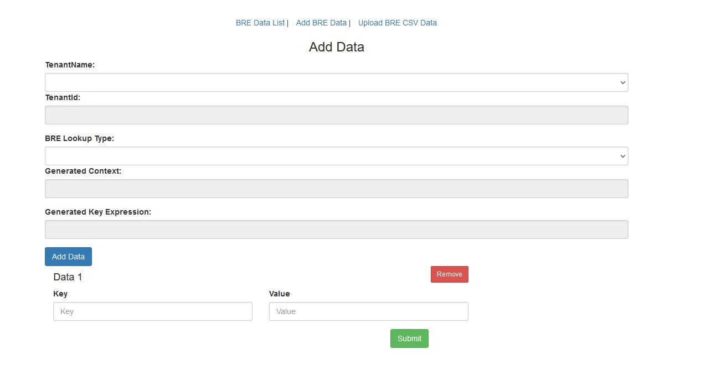
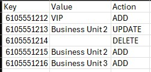

Creating a BRE Lookup
Before You Begin
If you are creating a new lookup you will need to request that a table be created for you.
If you want to see how to query the BRE from a flow, fill in the in form below then click here
If you are updating the data on your table skip to the update data section
Fill in the form with the necessary details and click "Update Directions"
Preparing the tenant to use the BRE:
⚠️ Important note: All BRE are settings, rules, attributes, and labels are case sensitive!
Navigate to the Business Rules
If you are a full admin on the Org you can cross launch or navigate directly to: Select your data center
If you are an external admin you must cross launch from the portal.
How to cross launch to BRE Rules

The steps in this section only need to be completed once on your tenant
Click Attributes in the top ribbon
Click Add
Name:
context (case sensitive)Data Type: Text
Click Save
Click Labels in the top ribbon
Click Add
Name:
(case sensitive) routeInfo Click Save
The steps in this section need to be completed for all new lookups on your tenant
Click Context in the top ribbon
Click Add Context
Name:
(case sensitive) Table/Context which was created for you Attribute: context
Click Save
Click on the line of the Context you just created (
) Add the rules listed below
Create the "Found" rule
Click on Add Rule (Editor)
Name:
Found Active: True
Label:
routeInfo Priority: 100
Copy the rule into the editor:
Create the "NotFound" rule
Click on Add Rule (Editor)
Name:
Notfound Active: True
Label:
routeInfo Priority: 99
Copy the rule into the editor:
Adding, updating, and removing data from your BRE table
Logging in
Navigate to Select your data center
Click the cluster to login

Adding and updating data
Click Add BRE Data
Select your tenant name from the Tenant Name drop down
Select the table name you want to add/update data to in the BRE Lookup Type drop down
Add the value you will be looking up in the Key field
Add the value you want to be returned in the Value field
Clicking Add Data will let you add additional rows
Clicking the Remove button will remove the row from your Add/Update
⚠️ Note this will not delete entries from the BRE. If you need to delete entries, you must use the CSV method in the next section.
Click Submit to save the updates
Adding, updating, and removing data in bulk
Create a CSV file with 3 columns
⚠️ CSV must have headers in the file or the first row will be skipped
Key: the value you will be looking up
Value: the value you want to be returned
Action: the action you want taken on the key (ADD, UPDATE, DELETE)
Example

Click Upload BRE CSV data
Select your tenant name from the Tenant Name drop down
Select the table name you want to add/update data to in the BRE Lookup Type drop down
Browse to select your CSV
Click Upload

Accessing the BRE data from your flow

table ani your lookup value
Parsing BRE data to a variable

YourOutputVariable $. routeInfo